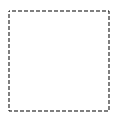

虚线
使用setLineDash和lineDashOffset属性来设置虚线样式
1 2 3 4 5 6 7 8 9 10 11 12 13 14 15 16 17 18 19 20
| var ctx = document.getElementById('canvas').getContext('2d'); var offset = 0; function draw() { ctx.clearRect(0,0, canvas.width, canvas.height); ctx.setLineDash([4, 2]); ctx.lineDashOffset = -offset; ctx.strokeRect(10,10, 100, 100); } function march() { offset++; if (offset > 16) { offset = 0; } draw(); setTimeout(march, 20); } march();
|

渐变 Gradients
createLinearGradient(x1, y1, x2, y2) 接受 4 个参数，表示渐变的起点 (x1,y1) 与终点 (x2,y2)。createRadialGradient(x1, y1, r1, x2, y2, r2)接受 6 个参数，前三个定义一个以 (x1,y1) 为原点，半径为 r1 的圆，后三个参数则定义另一个以 (x2,y2) 为原点，半径为 r2 的圆。
1 2 3 4 5 6 7 8 9 10 11
| function draw() { var ctx = document.getElementById('canvas').getContext('2d'); var radial = ctx.createRadialGradient(45,45,10,52,50,30); radial.addColorStop(0, '#A7D30C'); radial.addColorStop(0.9, '#019F62'); radial.addColorStop(1, 'rgba(1,159,98,0)'); ctx.fillStyle = radial; ctx.fillRect(0,0,150,150); }
|
简单动画
window.requestAnimationFrame()
window.requestAnimationFrame() 方法告诉浏览器您希望执行动画，并请求浏览器调用指定的函数在下一次重绘之前更新动画。该方法将在重绘之前调用的回调作为参数。
如果想做逐帧动画的时候应该用这个方法，你的动画函数执行会先于浏览器重绘动作。
下面举一个小球的例子
codepen地址
1 2 3 4 5 6 7 8 9 10 11 12 13 14 15 16 17 18 19 20 21 22 23 24 25 26 27 28 29 30 31 32 33 34 35 36 37 38 39 40 41
| var canvas = document.getElementById('canvas') var ctx = canvas.getContext('2d') var raf var ball = { x: 100, y: 100, vx: 5, vy: 2, radius: 25, color: 'blue', draw:function(){ ctx.beginPath() ctx.arc(this.x,this.y,this.radius,0,Math.PI*2,true) ctx.closePath() ctx.fillStyle = this.color ctx.fill() } } function clear(){ ctx.fillStyle = 'rgba(255,255,255,0.3)'; ctx.fillRect(0,0,canvas.width,canvas.height); } function draw(){ clear() ball.draw() ball.x+=ball.vx ball.y+=ball.vy raf = window.requestAnimationFrame(draw) } canvas.addEventListener("mouseover",function(e){ raf = window.requestAnimationFrame(draw) }) canvas.addEventListener("mouseout",function(e){ window.cancelAnimationFrame(raf) }) ball.draw()
|
1 2 3 4 5 6 7
| if (ball.y + ball.vy > canvas.height || ball.y + ball.vy < 0) { ball.vy = -ball.vy; } if (ball.x + ball.vx > canvas.width || ball.x + ball.vx < 0) { ball.vx = -ball.vx; }
|
ImageData
ctx.createImageData(width,height)
创建一个 新的、空白的、指定大小的 ImageData 对象
1 2 3 4 5 6 7
| var canvas = document.getElementById("canvas"); var ctx = canvas.getContext("2d"); ctx.rect(10, 10, 100, 100); ctx.fill(); console.log(ctx.createImageData(100, 100));
|
ctx.getImageData(left, top, width, height)
得到上下文的像素数据
这个方法会返回一个ImageData对像，它代表了画布区域的像素数据，此画布的四个角落分别表示为(left, top), (left + width, top), (left, top + height), 以及(left + width, top + height)四个点。
1 2 3
| var imgData = ctx.getImageData(x, y, 1, 1); var data = imgData.data; var rgba = 'rgba(' + data[0] + ',' + data[1] + ',' + data[2] + ',' + data[3] + ')'
|
ctx.putImageData(myImageData, dx, dy)
对场景进行像素数据的写入
dx和dy参数表示你希望在场景内左上角绘制的像素数据所得到的设备坐标。
缩放
drawImage
1 2 3 4 5 6 7 8
| void ctx.drawImage(image, dx, dy); void ctx.drawImage(image, dx, dy, dWidth, dHeight); void ctx.drawImage(image, sx, sy, sWidth, sHeight, dx, dy, dWidth, dHeight);
|
1 2 3 4 5 6 7 8 9 10 11 12 13 14 15 16 17 18 19 20 21 22 23 24
| var img = new Image(); img.src = 'https://mdn.mozillademos.org/files/5397/rhino.jpg'; img.onload = function() { draw(this); }; function draw(img) { var canvas = document.getElementById('canvas'); var ctx = canvas.getContext('2d'); ctx.drawImage(img, 0, 0); img.style.display = 'none'; var zoom = function(event) { var x = event.layerX; var y = event.layerY; zoomctx.drawImage(canvas, Math.abs(x - 5),Math.abs(y - 5), 10, 10, 0, 0, 200, 200); }; canvas.addEventListener('mousemove', zoom); }
|
在codepen查看缩放效果
反锯齿
因为反锯齿默认是启用的，我们可能想要关闭它以看到清楚的像素
(不同浏览器需要不同前缀)
ctx.imageSmoothingEnabled \ mozImageSmoothingEnabled \ webkitImageSmoothingEnabled \ msImageSmoothingEnabled
canvas的优化
1 2 3 4 5 6
| myEntity.offscreenCanvas = document.createElement("canvas"); myEntity.offscreenCanvas.width = myEntity.width; myEntity.offscreenCanvas.height = myEntity.height; myEntity.offscreenContext = myEntity.offscreenCanvas.getContext("2d"); myEntity.render(myEntity.offscreenContext);
|
避免浮点数的坐标点，用整数取而代之
浏览器为了达到抗锯齿的效果会做额外的运算，所以在调用drawImage()函数时，应该用Math.floor()函数对所有的坐标点取整。
在离屏canvas中缓存图片的不同尺寸，而不要用drawImage()去缩放它们
使用多层画布去画一个复杂的场景
用CSS设置大的背景图
如果你有一张静态的背景图，那就用一个静态的div元素，结合background，再将它置于画布元素之后。这么做可以避免在每一帧在画布上绘制大图。
用CSS transforms特性缩放画布。
CSS的transforms特性由于调用GPU，因此更快捷。最好的情况是，不要将小画布放大，而是去将大画布缩小
1 2 3 4 5 6 7 8
| var scaleX = canvas.width / window.innerWidth; var scaleY = canvas.height / window.innerHeight; var scaleToFit = Math.min(scaleX, scaleY); var scaleToCover = Math.max(scaleX, scaleY); stage.style.transformOrigin = "0 0"; stage.style.transform = "scale(" + scaleToFit + ")";
|
更多关于Canvas性能优化的文章
本文是学习 MDN_Canvas_API 的笔记